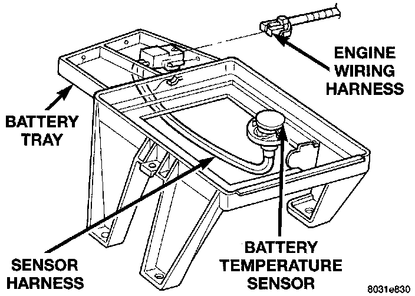

Battery Temperature Sensor: Description and Operation
Battery Temperature Sensor Location:

SYSTEM OPERATION
The battery temperature sensor is used to determine the battery temperature and control battery charging rate. This temperature data, along with data from monitored line voltage, is used by the PCM to vary the battery charging rate. System voltage will be higher at colder temperatures and is gradually reduced at warmer temperatures.
CIRCUIT OPERATION
The Powertrain Control Module (PCM) determines battery temperature on circuit T222. Circuit T222 connects the PCM to the battery temperature sensor. Circuit T222 connects to cavity C15 of the PCM. Circuit K4 provides ground for the sensor and connects to PCM cavity A4.